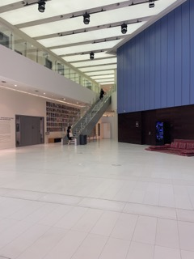
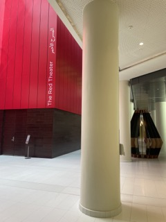

"An unforgettable, immersive experience" - John Smith
About
Inspired by the individualised experiences of visiting and appreciating an art gallery, this short film features an all in one perspective-based vision that explores what it means to come face to face with art displays.
Behind the Scenes


This movie was shot in the NYUAD Art Center, specifically along the corridors and in the main space next to the theatres. We did not manipulate the scenes and artworks, but rather filmed them as they were. the music was sourced from youtube and a bsic editing software was used. we took turns filming to make sure we included all members. a standard iphone was used for all the shots filmed.